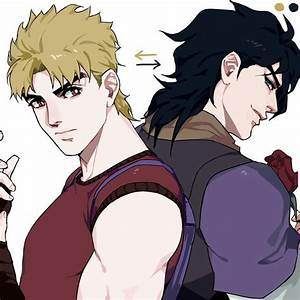
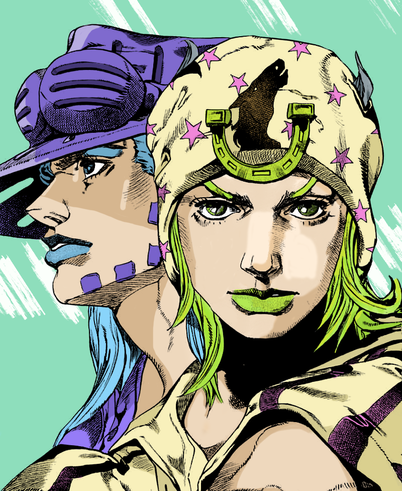

Présentation des principaux personnages
Partie 1 : Phantom Blood
Jonathan Joestar, fils de George Joestar, héritier de la riche famille des Joestar. Il est le protagaoniste de cette partie, il s dresse contre son ennemi Dio Brando.
Dio Brando, fils d'un voleur Dario Brando, se fait adopter par les Joestars suite à une promesse faite lorsque Dario a sauvé George lors d'un accident de calèche. il est extrèmement mauvais et va cherché à se faire bien voir de son père adoptif dans le but de priver Jonathan de l'héritage familial et de tout garder pour lui.
William Anthonio Zeppelli, premier memebre de la famille Zeppeli, il a aidé Jonathan à vaincre Dio en son temps.

Dio Brando et Jonathan Joestar
Partie 2 : Battle Tendency
Joseph Joestar, petit fils de Jonathan, se bat avec les ondes, une partiularité qu'il a hérité de son grand-père.
Speedwaggon, il est un ami de la ligné des Joestar, devenant riche grace à la découverte de puits de pétrole, il aidera Joseph dans son combat contre les hommes du pilier.
Stroheim, un nazi rencontré dans leur combat contre les hommes du pilier.
Suzie Q, une belle jeune femme qui deviendra la femme de Joseph et ainsi perpétuera la ligné des Joestar.
Kars , Essidy et Wamuu sont les hommes du pilier, ce sont donc les enemis de Joseph.
Partie 3 : Stardust Crusaders
Joseph Joestar, grand père de Jotaro et père de Holly.
Jotaro Kujo, petit fils de Joseph.
Holy Kujo, mère de Jotaro.
J.P Polnareff ami et allié de Jotaro dans sa quête contre Dio.
Noriaki Kakyoin, ami et allié de Jotaro dans sa quête contre Dio.
Mohammed Avdol, grand ami de Joseph et de Jotaro, il contribue énormément à leur combat contre Dio.
Enya the Hag, conceillère de Dio, et ennemie de Jotaro.
Dio Brando, être immortel ennemi de Jotaro et ses amis
Partie 4: Diamond is Unbreakable
Josuke Hagashikata, fils illégitime de Joseph Joestar.
Jotaro Joestar, allié de Josuke et demi frère de Josuke.
Joseph Joestar, père de Josuke.
Rohan Kishibe allié de Josuke.
Okuyasu Nijimura, allié et ami de Josuke.
Yoshikage Kira, ennemi principal de Josuke et de ses amis.
Partie 5: Golden Wind
Giorno Giovanna, fils de Dio Brando.
Diavolo, ennemi de Giorno Giovanna.
Guido Mista, allier de Giorno giovanna.
Bruno Bucciarati, allier de Giorno
Polpo, ennemi de Giorno.

Giorno Giovanna
Partie 6: Stone Ocean
Jolyne Cujoh, fille de Jotaro.
Emporio Alniño, allier de Jolyne.
Enrico Pucci, ennemi principal de Jolyne.
Jotaro Kujo, père de Jolyne.
Ermes Costello, allier de Jolyne.
Donatello Versus, fils de Dio et ennemi de Jolyne.
Partie 7: Steel Ball Run
Johnny Joestar, descendant des Joestars.
Jayro Zeppeli, ami et allier de Johnny Joestar.
Lucy Steel, allier de Johnny et Jayro.
Funny Valentine, ennemi de Johnny et Jayro.
Diego Brando, rival de Johnny et Jayro.

Johnny Joestar et Gyro Zeppeli
Partie 8: Jojolion
Josuke Higashikata (JoJolion), personnage principal.
Yasuho Hirose, allié de Josuke.
Norisuke Higashikata IV, allié du Josuke.
Kaato Higashikata, ennemi de Josuke.
Tsurugi Higashikata, ennemi de Josuke.

Josuke Higashikata (partie 8)